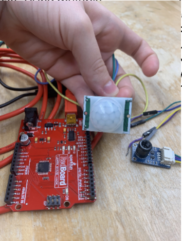

This website details the Security Bot group project from CSCI 352, Human and Robot interation as taught at the University of the South. Our intention is to find a simple and modern solution to increase the safety in public and private spaces. Thus, we present the security bot: designed to patrol, protect, detect, and alert others about potential threats. By combining sensors, programming, and a non-lethal weapon, we aim to reduce human risk and involvement in the field of security. We are utilizing infrared and thermal sensors to allow the robot to pick up on unauthorized activity. We are also utilizing the built in speaker, microphone, and camera to be able to differentiate between people with authorization and those without authorization. A pre-programmed route on a map will determine the patrol process. A client-subscription allows communication between the robot and the turtlebot. We have a toy claymore attached to the robot to discourage messing with the robot. The claymore and our flashing siren will ensure a clear message be delivered to unauthorized persons.
We implemented a motion sensor was utilized through pins to be able to detect motion and thus intruders.
Response automation:
pip install pyttsx3
https://pypi.org/project/pyttsx3/?utm_source=chatgpt.com
Hardware interaction:
pip install RPi.GPIO
https://pypi.org/project/RPi.GPIO/?utm_source=chatgpt.com
Camera Dependency:
Adafruit mlx90640
https://learn.adafruit.com/adafruit-mlx90640-ir-thermal-camera/overview
Navigation library:
Nav2
https://docs.nav2.org/
We had difficulties getting the turtlebot to move on its own with the code, getting all of the code to come together after working on the pieces separately, and getting the thermal camera to cooperate
1. Turn on the computer, the claymore, and the robot (after robot has charged)
2. Place the robot where you would like to have the patrol begin and load up the claymore
3. Run the code
Here is the Pseudo code for security defense deployment
Here is the Pseudo code for movement
Here is the Pseudo code for human detectino

Here is a picture of a map used to make the turtle bot move around